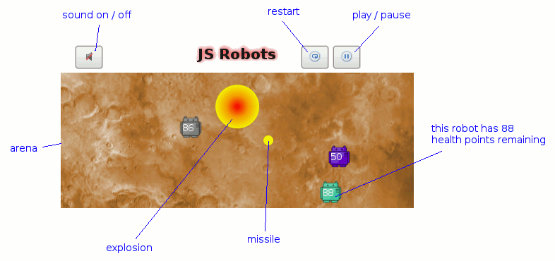

How to play JS Robots
What is JS Robots?
It's a JavaScript reimagining of Tom Poindexter's seminal CROBOTS game. You program a script to control a robot and then put your robot up to fight against other CPU or human controlled robots each with various scripts!
Quick start
- You need at least two robot players to battle (CPU and / or Human - it doesn't matter)
- Tick the checkboxes to enable various robots
- CPU robots must use one of the preset scripts
- Human players can create a script from scratch, use a preset or edit a preset
- Press the play button!
Game arena and buttons
- The top left button toggles the sound on or off. Note that depending on your browser / operating system you might not get sounds anyway :-(
- The restart button starts a fresh game and will pick up any changes to the selected robot scripts
- The top right button starts the very first game and also pauses / resumes the current game
- Your robot will get damaged if an explosion touches it or if it hits the edge of the arena or another robot
Robot script tutorial
OK, let's write our first JS Robots script!
Let's write a robot that scans clockwise incrementally and launches a missile at any target found. Let's also move closer to the target if it far away and move away from the target if it is close.
Right, here's how we scan clockwise incrementally (and nothing else!):
if(!this.scanAngle) //ie. first time round
{
this.scanAngle = 0; //initial value
}
//scan() returns false if nothing in scan line OR
//an integer representing the distance to the CLOSEST
//robot in the scan line
var range = this.scan(this.scanAngle, 5); //variance of +/- 5 degrees
//Have target
if(range)
{
//fire missile and move closer / away as necessary
}
this.scanAngle += 10; //move scanner 10 degrees clockwise
We save the scanAngle variable to this (which means the robot) because we want to remember the value between iterations - so that we can increment it. We dont save the range variable to this because it's a throwaway value that is going to change each iteration anyway.
Note how we initialise the scanAngle variable by checking for its existence and, if it doesn't exist, creating it and setting its initial value.
Then we use the robot's scan() method to scan for enemy robots. We specify a
variance of 5 degrees so, in this instance, we are actually scanning from
355 to 5 degrees.
The scan() method returns false if no enemy robots were detected, and so
if(range){/*do something*/} is a code block that executes when we
DO have an enemy robot in sight. We'll come back to this code block.
Finally, we increment the scan angle by 10 degrees.
If you run this script as a player in the game (perhaps against a single, harmless CPU player), you can see that the "Scan" on the human player statistics table is counting up as we would expect.
Adding some firepower!
At the minute we're just standing still and scanning around. We're a sitting duck! Let's launch a missile at any enemy robots we detect with our scan.
Add to the code block we just talked about so that it looks like this:
//Have target
if(range)
{
this.cannon(this.scanAngle, range);
}
With the cannon() method we can launch a missile at the specified angle and with the specified range (distance). The missile will travel at the given angle for the given range and then explode.
What we do here is launch a missile at the current scanAngle and with the range as returned previously by scan(). Scan() gives use the exact range to the closest enemy robot BUT don't forget that we scanned with 5 degrees of variance and so the enemy robot might not be exactly at scanAngle! The enemy robot will no doubt be zipping around like a maniac too!
Your full script should now look like this:
if(!this.scanAngle) //ie. first time round
{
this.scanAngle = 0; //initial value
}
//scan() returns false if nothing in scan line OR
//an integer representing the distance to the CLOSEST
//robot in the scan line
var range = this.scan(this.scanAngle, 5); //variance of +/- 5 degrees
//Have target
if(range)
{
this.cannon(this.scanAngle, range);
}
this.scanAngle += 10; //move scanner 10 degrees clockwise
If you run this script as a player in the game you can see that it is standing still and scanning incrementally as before, but will now launch a missile if any enemy robot is detected in its scan.
Put your left leg in, your right leg out...
We can attack now, be we still don't move and so we're still a sitting duck!
Let's move closer to or away from any found target based on its distance from us.
Add to the if(range) code block so that it looks like this:
//Have target
if(range)
{
this.cannon(this.scanAngle, range);
if(range > 300) //Move closer
{
this.drive(this.scanAngle, 75);
}
else if(range < 200) //Back off
{
this.drive(this.scanAngle, 0);
this.drive(this.scanAngle - 180, 100);
}
}
We launch the missile as before. This time though we drive! The range variable (from our prior call to scan() if you remember) is the distance from us to the closest enemy robot. We drive differently depending on the value of this. If the enemy robot is more than 300 units away, we drive - at scanAngle - with 75% engine power. If the enemy robot is less than 200 units away, we do two things. First, because changes in direction can only be negotiated at speeds of less than 50%, we stop by driving with an engine power of zero. Then we drive in the direction opposite to scanAngle by using scanAngle - 180. We drive away at 100% engine power.
Extra credit if you've realised that there's an implied case of the enemy robot being between 200 and 300 (inclusive) units away. In this case, the robot does not move because we haven't specified so.
Your full script should now look like this:
if(!this.scanAngle) //ie. first time round
{
this.scanAngle = 0; //initial value
}
//scan() returns false if nothing in scan line OR
//an integer representing the distance to the CLOSEST
//robot in the scan line
var range = this.scan(this.scanAngle, 5); //variance of +/- 5 degrees
//Have target
if(range)
{
this.cannon(this.scanAngle, range);
if(range > 300) //Move closer
{
this.drive(this.scanAngle, 75);
}
else if(range < 200) //Back off
{
this.drive(this.scanAngle, 0);
this.drive(this.scanAngle - 180, 100);
}
}
this.scanAngle += 10; //move scanner 10 degrees clockwise
If you run this script as a player in the game you can see that it is launching missiles and scanning incrementally as before, but will now move occasionally if the scanned enemy robot is very close or very far.
Finishing touches
Our robot is pretty cool now! It could be much cooler though. Have you noticed that it isn't attacking very often? Because it increments the scanAngle even if a target has been found, acquired targets are very quickly lost.
Let's "lock" the scanAngle if we have a target so that we can keep pummelling the enemy robot! Replace the very last line of the script with this:
else //Only change scanning angle if we've lost the target
{
this.scanAngle += 10;
}
With this, we do our attacking and moving for acquired targets as before BUT increment the scanAngle only if no targets were found.
Your full script should now look like this:
if(!this.scanAngle) //ie. first time round
{
this.scanAngle = 0; //initial value
}
//scan() returns false if nothing in scan line OR
//an integer representing the distance to the CLOSEST
//robot in the scan line
var range = this.scan(this.scanAngle, 5); //variance of +/- 5 degrees
//Have target
if(range)
{
this.cannon(this.scanAngle, range);
if(range > 300) //Move closer
{
this.drive(this.scanAngle, 75);
}
else if(range < 200) //Back off
{
this.drive(this.scanAngle, 0);
this.drive(this.scanAngle - 180, 100);
}
}
else //Only change scanning angle if we've lost the target
{
this.scanAngle += 10;
}
If you run this script as a player in the game you can see that it is moving and launching missiles as before, but will now stay with the same target for longer and stalk enemy robots more aggressively.
By the way congratulations, you have just wrote the Hunting Sniper robot! ;-)
Be sure to check the other robot presets for more ideas. You'll also want to check the below API reference to make a real killer robot!
Robot scripting notes
-
Unfortunately, and this makes the game less playable and usable than it should really be, robot scripts do not operate concurrently. Rather, each playing robot's script executes once all the way through and then the next robot gets a turn and so on. This sucks - and is not how the original CROBOTS operates - because looping becomes unfair / impossible. Also, a longer script that attacks twice and moves twice will tend to always beat a script that only moves and attacks once BECAUSE the longer script is effectively getting more CPU time.
We are working on this (see the about page), but for the time being the following types of script should not be used:
Conditional / endless while loops for example:
//Init if(!this.coord) { this.coord = this.funcToGetACoord(); this.heading = this.funcToGetHeadingForCoord(this.coord); this.finished = false; } //move to this.coord and then simply stop while(!this.finished) { this.drive(this.heading, 100); //Stop if close enough to desired coord if(this.funcToSeeIfCloseToCoord(this.coord)) { this.drive(this.heading, 0); //Stop this.finished = true; } //get new heading to coord if we have stopped for some reason else if(this.speed() == 0) { this.heading = this.funcToGetHeadingForCoord(this.coord); this.drive(this.heading, 100); //For quick getaway bug } }What will happen here is that all of this script will execute on this robot's turn. The robot will indeed move to the initialised coordinate, but will do so in the blink of an eye and will not actually appear to move! We are basically hogging CPU time with this kind of loop. If you're feeling brave you can modify the mosquito script to behave like this and you can see for yourself how it doesn't move (but it has actually gone to the initialised coordinate).
-
For loops for example:
//Init if(!this.coord) { this.coord = {x:250, y:250}; this.heading = this.funcToGetHeadingForCoord(this.coord.x, this.coord.y); this.arrived = false; this.firedAlready = false; } if(!this.arrived) { this.drive(this.heading, 100); //Stop if close enough to desired coord if(this.funcToSeeIfCloseToCoord(this.coord) ) { this.drive(this.heading, 0); //Stop this.arrived = true; } //get new heading if we stopped for whatever reason else if(this.speed() == 0) { this.heading = this.funcToGetHeadingForCoord(this.coord.x, this.coord.y); this.drive(this.heading, 100); //For quick getaway bug } } else if(!this.firedAlready) //arrived so go wild (once!) { //sweep around and fire at different ranges for each angle for(var angle = 0; angle < 360; angle += 5) { for(var range = 50; range < 250; range += 10) { var fired = this.cannon(angle, range); } } this.firedAlready = true; }What we do here is drive to the centre of the arena normally. We then use a couple of for loops to launch missiles everywhere! We loop through a full circle and also we loop through some different ranges for each angle of the circle. Luckily missiles take a few turn to reload and so we only manage to get one off, but we very definitely hog the CPU here. We could also be doing something other than firing in the loops - scanning for the next target for example. Unfair!
-
Doing lots in one script for example:
//init var scanAngle = rand(360); var fired = false; var range = this.scan(scanAngle, 5); if(range && !fired) { this.cannon(scanAngle, range); fired = true; } this.scanAngle += 10; var range = this.scan(scanAngle, 5); if(range && !fired) { this.cannon(scanAngle, range); fired = true; } this.scanAngle += 10; var range = this.scan(scanAngle, 5); if(range && !fired) { this.cannon(scanAngle, range); fired = true; } this.scanAngle += 10; var range = this.scan(scanAngle, 5); if(range && !fired) { this.cannon(scanAngle, range); fired = true; }Here we hog the CPU by scanning and firing multiple times in one iteration.
-
To debug your robot script, you may use the log() function thus:
log('some string'); log(this.someVariable); log(this.loc_x()); -
To remember things between iterations, save it to a member variable thus:
this.somethingToRemember = whatever(); -
Robot object methods are documented (below) and internal housekeeping methods / members are prefixed with a '_' [underscore]. Avoid these names for methods and variables in your own scripts and you will be fine.
-
In your robot script, any and all JavaScript functions / objects / methods are available. The static methods of the Math object might be especially useful. Take a look at the JavaScript guide on DevGuru. Be sure you don't, for example, alert() anything out though because it will end in tears!
-
You can define a reusable method for your robot thus:
//Define this.reusableMethod = function(speed) { this.whatever = something(); this.drive(90, speed); }; this.scan(this.scanAngle, 5); //Other stuff here //Use this.reusableMethod(100);
A semicolon after the method definition is required.
Arena environment
Overview:
- Arena size
- Coordinate system
- Compass system
Details:
- The arena is a square of 500 units by 500 units
- The top-left of the arena is (0,0). The bottom-right is (499,499).
- The compass system is oriented so that due north (up) is 0 degrees, 90 is east,
180 is south, 270 is west. One degree west (left) of due north is 359.
315 0 45 \ | / \ | / 270 --- x --- 90 / | \ / | \ 225 180 135
Damage table
Damage accumulates thus:
| Case | Damage |
|---|---|
| Hit wall | 2 (and speed down to zero) |
| Hit other robot | 2 each (and speed down to zero) |
| Caught in explosion | 10 |
Robot script API reference
Per robot methods
Need to prefix these with this.
-
scan(degree, resolution)
The scan() method scans for enemy robots at the specified degree and resolution. scan() returns false if no robots are within the scan line or a positive integer representing the distance to the closest robot. Degree should be within the range 0-359, otherwise degree is forced into 0-359 by a modulo 360 operation, and made positive if necessary. Resolution controls the scanner's sensing resolution, up to +/- 10 degrees.
Examples:
var range = this.scan(45, 0); //Scan the 45 degree line, with no variance var range = this.scan(365, 10); //Scans the lines from 355 degs to 15 degs -
cannon(degree, range)
The cannon() method fires a missile heading in the specified range and direction. cannon() returns true if a missile was fired, or false if the cannon is reloading. Degree is forced into the range 0-359 as in scan(). Range can be 0-350, with greater ranges truncated to 350.
Examples:
var degree = 45; //Set a direction to test if((var range = this.scan(degree, 2)) != false) //See if a target is there { this.cannon(degree, range); //Fire a missile } -
drive(degree, speed)
The drive() method activates the robot's drive mechanism, on the specified heading and speed. Degree is forced into the range 0-359 as in scan(). Speed is expressed as a percent, with 100 as maximum. A speed of 0 disengages the drive. Changes in direction can be negotiated at speeds of less than 50 percent.
Examples:
this.drive(0, 100); //Head due north, at maximum speed this.drive(90, 0); //Stop motion -
damage()
The damage() method returns the current amount of damage incurred. damage() takes no arguments, and returns the integer percent of damage, 0-99. (100 percent damage means the robot is completely disabled, thus no longer running!)
Examples:
var d = this.damage(); //Save current state ; ; ; //Other instructions if(d != this.damage()) //Compare current state to prior state { this.drive(90, 100); //Robot has been hit, start moving d = this.damage(); //Get current damage again } -
speed()
The speed() method returns the current speed of the robot. speed() takes no arguments, and returns the integer percent of speed, 0-100. Note that speed() may not always be the same as the last drive(), because of acceleration and deacceleration.
Examples:
this.drive(270, 100); //Start drive, due west full speed ; ; ; //Other instructions if(this.speed() == 0) //Check current speed { this.drive(90, 20); //Ran into the west wall, or another robot so backtrack east } -
loc_x() and loc_y()
The loc_x() method returns the robot's current x axis location. loc_x() takes no arguments, and returns an integer in the range 0-499. The loc_y() method is similar to loc_x(), but returns the current y axis position.
Examples:
if(this.loc_y() > 20) { this.drive(0, 50); //Start heading for north wall } else { this.drive(0, 0); //Stop drive }
Utility functions
-
rand(limit)
Returns a random integer between zero and limit (exclusive). -
sqrt(number)
Returns the square root of a number. Number is made positive if necessary. -
sine(degree)
Returns the trigometric sine of degree (degree being an integer from zero to 359). -
cosine(degree)
Returns the trigometric cosine of degree (degree being an integer from zero to 359). -
tan(degree)
Returns the trigometric tangent of degree (degree being an integer from zero to 359). -
atan(ratio)
Returns the integer degree value, between -90 and +90, of the ratio.